こんにちは。今回は、デジタルファブリケーションの最終課題を行います。
「一目で分かり、その場に馴染む多目的トイレのマークを作る」
＜自分達が取り組むことにした問題＞
最終課題で、班のメンバーと一目で分かり、その場に馴染む多目的トイレのマークを作ることにした。
この題材は、Desing for Othersの時に、トイレの場所がわからない人がいたことから始まった。
そこから課題が発展していき、今の多目的トイレのマークは分かりづらく、分かりやすくその場に馴染むマークを制作できるのではないかと考え、
今回の「一目で分かり、その場に馴染む多目的トイレのマークを作る」というテーマに至った。
＜作成したマーク＞
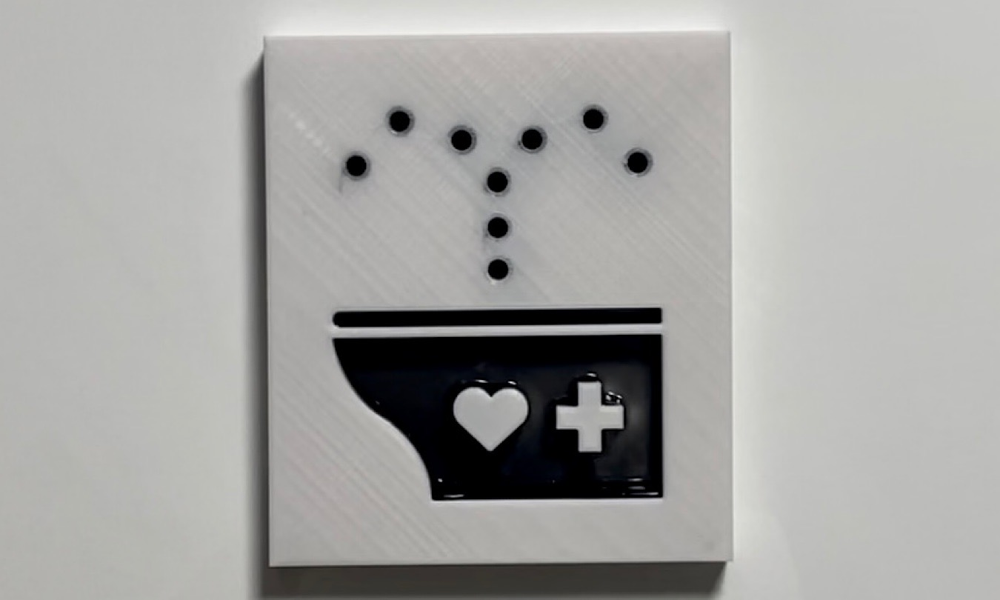
＜マークの説明＞
このマークはトイレとヘルプマークを合わせたをイメージして作成した。
よりシンプルに、分かりやすくを目的としたマークである。
＜作成プロセス＞
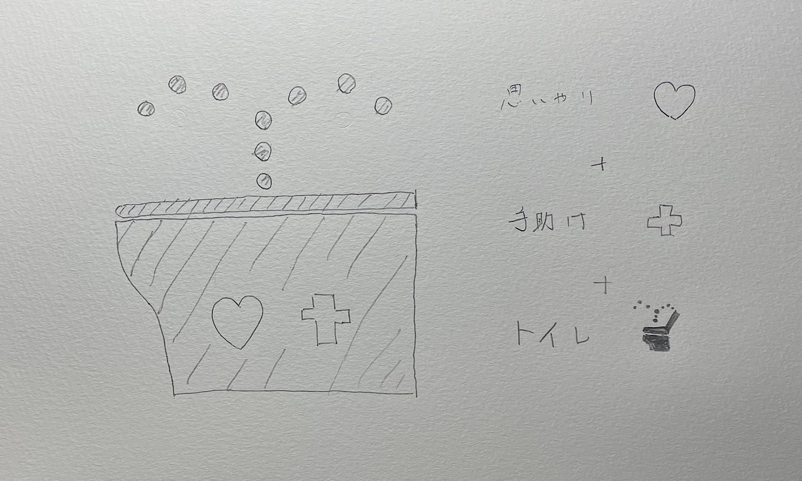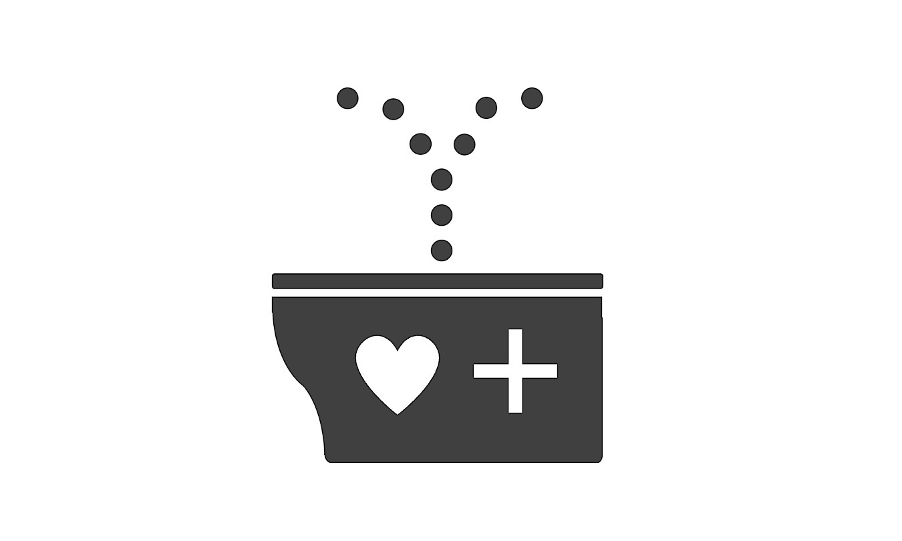
デザイン案を考える
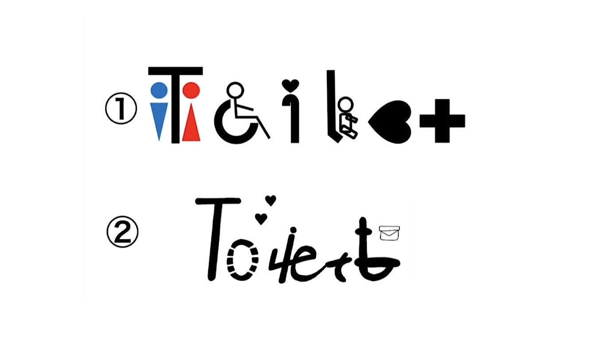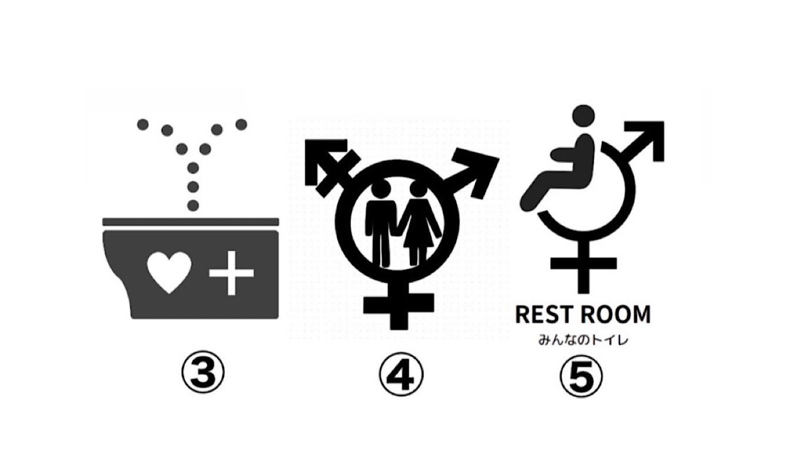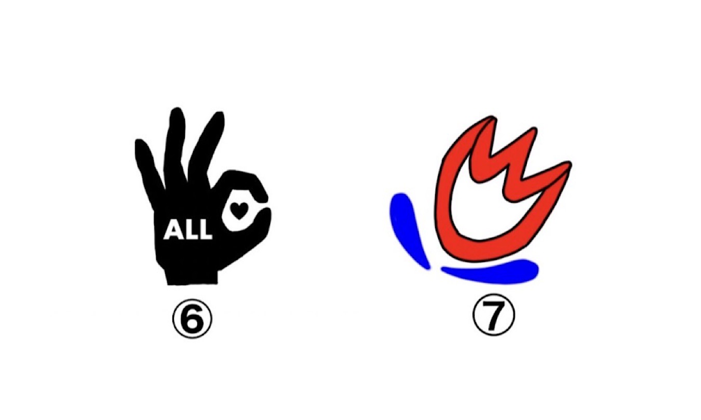
班で案を出し合い、52名を対象としたアンケートを取ってみた
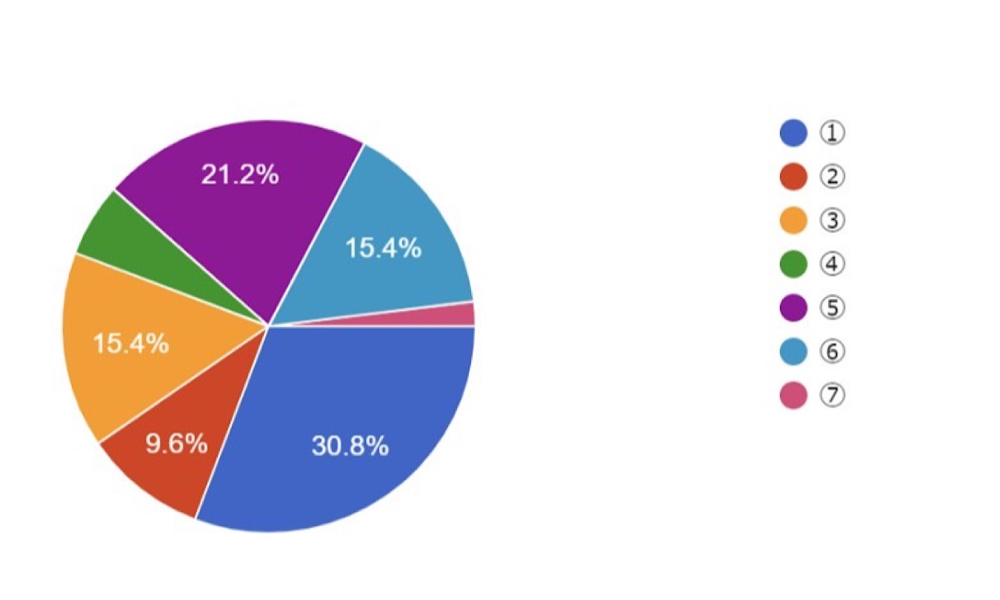
「質問１.街中になじみやすそうなデザインを一つ選択してください」
質問１では、文字が無くてシンプルなデザインが人気だった。
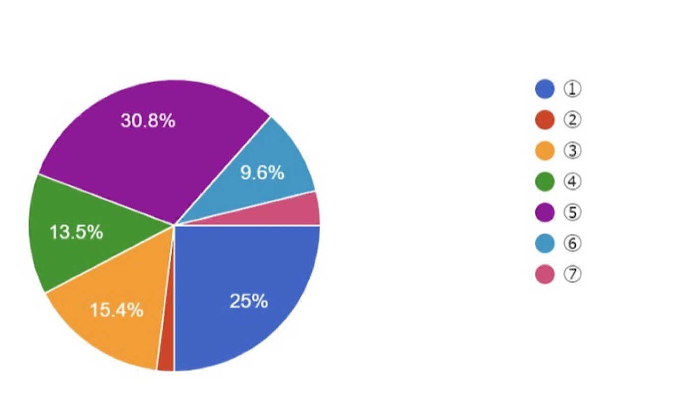
質問２.デザイン的に優れている（わかりやすい）デザインを一つ選択してください
質問２では、トイレの形や文字が入っているデザインが人気だった。
アンケートの結果から、自分の考えたマークはある程度シンプルでわかりやすいデザインではあるが、
全員が分かりやすいデザインにはできていないということが分かった。
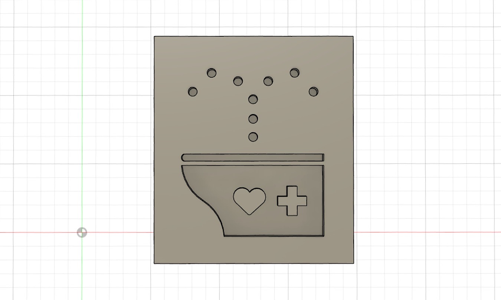
Fusion 360でマークを作成
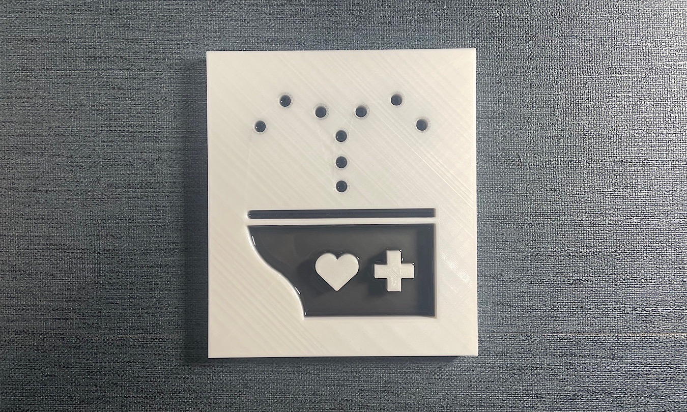
分かりやすさを少しでも上げるために、黒色のレジンで透明感を出してみた。
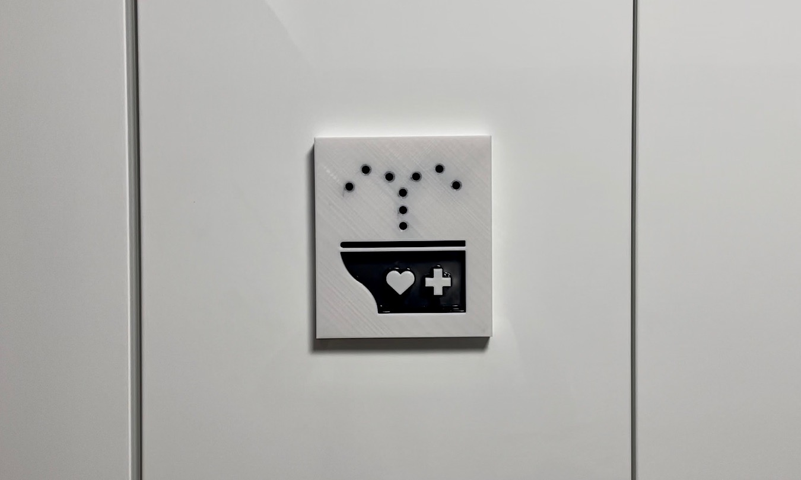
設置するとこんな感じ
＜映像＞
＜使用機材＞
3Dプリンター